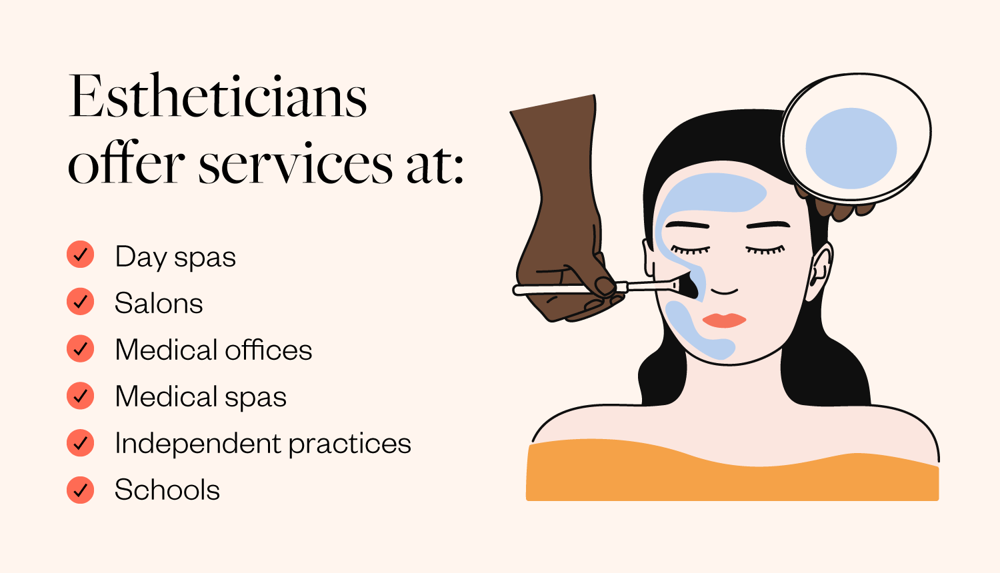

How to become a Dermatologist

If you are considering a career as a Dermatologist, or just looking for up-to-date information about the Medical specialty of Dermatology, then you are in the right place! As a Medical school with students in Dermatology clinical rotations, we have first-hand experience with this subject!
We wrote this article as an introduction to Dermatology, but also to provide a detailed step-by-step guide for future Medical students looking for accurate information about how to become a Dermatologist. We would like to convey to the reader, the level of dedication necessary to complete a residency in Dermatology, get licensed, and then have a career as a Dermatologist.
Quick Navigation Links to 10 FAQ's about Dermatology and Dermatologists
- How to become a Dermatologist?
- what are the subspecialties of Dermatology?
- what is a Dermatologist?
- what does a Dermatologist do?
- long does it take to become a Dermatologist?
- Do Dermatologists do surgery?
- Is becoming a Dermatologist worth it?
- major should I have in college to be a Dermatologist?
- dermatologist vs Esthetician - What's the difference?
- How to get started in Dermatology?
Dermatologists education - how to become a Dermatologist?
The education and training path to become a Dermatologist takes 12 years or longer to complete. Obviously, this takes an enormous amount of dedication and sacrifice. Assuming that a high school education or GED has been completed, here are the necessary steps to become a Dermatology specialist:
Step 1: Enroll in a college or University and complete the coursework needed for admission into Medical school
Most medical schools require the following prerequisite courses: mathematics, physics, chemistry, biology, organic chemistry, anatomy, and English. To be competitive, medical admissions specialists suggest earning a B or higher in all classes. Many schools do require a bachelor's degree for matriculation. In addition to receiving good grades, other experiences such as volunteering, leadership roles, research, and shadowing are definitely taken into account by admissions specialists. Having a pre-med or healthcare-related degree is not required by the majority of Med schools.
Step 2: Take the MCAT (Medical College Admissions Test)
The Medical College Admissions Test (MCAT) is required for entrance into all US medical schools. The MCAT is an eight-hour, computer-based examination. However, during the COVID-19 Pandemic, this requirement was waived by many schools. Scoring well on this test is an essential component of being considered as a medical school applicant. Many Universities use computer algorithms that automatically filter and reject applications immediately if a predetermined MCAT exam score isn't met.
Step 3: Get accepted and attend an Allopathic (MD degree) or Osteopathic (DO degree) Medical school
After undergraduate prerequisites are complete, students wanting to become Dermatologists must apply and be accepted to an Allopathic (MD degree) or Osteopathic (DO degree) medical school. Because Medical school admission is highly competitive, high-grade point averages and MCAT scores are very important. Most med schools use computer-based algorithms to screen applicants, so it's vital to have good scores in order to even be considered for admission.
Medical school curriculum is broken down into two distinct parts.
The first two years of med school are spent doing classwork, where the basic sciences of Medicine are learned. The last two years of Medical school are spent in teaching hospitals where students become familiar with clinical skills and procedures.
During Medical school, all students must pass two national board examinations. For Allopathy students, these are the USMLE Step 1 and Step 2 exams. There are similar board examinations for D.O. students, called the COMLEX tests.
During their final year at medical school, students submit applications and interview for various residency programs in their chosen career. Of course for this topic, this includes Dermatology residencies. Following the interview process, Medical school students are matched into residency training programs using a computer algorithm method termed “The Match”. Finally, medical students complete their studies and prepare to begin residency and become dermatologic specialists.
Step 4: Begin and complete Internship and Residency
After Medical school is officially complete, graduates now get a limited license to practice and see patients. However, they must do so under supervision. All future Dermatology residents must complete a one-year Internship, also known as transitional or preliminary year. During this time, trained students, who now have an M.D. or D.O. degree, work in teaching hospitals, clinics, and emergency departments to see patients and learn skills for a broad understanding of medicine. The USMLE Step 3 or COMLEX Level 3 must also be completed during this time.
Dermatology residency is a highly competitive three-year program. It is during this time that Residents in Dermatology finally participate in a comprehensive program that focuses entirely upon Dermatologic Medicine. During this time, resident physicians practice in many different areas including consulting with inpatient and outpatient dermatological problems, dermatologic surgery, dermatology electives, dermatopathology, and in dermatologic research. Residents also participate in conferences, national and international events, and are encouraged to publish their findings.
Step 5: Board Certification
Although board certification in Dermatology isn't technically required for obtaining a professional medical license, it is a desirable credential that demonstrates knowledge and exceptional expertise. Nearly every hospital, clinic, or educational institution demands physicians become board-certified to gain employment as a Dermatologic specialist after residency.
Certification for Dermatology residents can be obtained through several governing bodies including the American Board of Dermatology (ABD) and the American Osteopathic Board of Dermatology.
Step 6: Fellowship Training (optional)
Dermatologists have the option to pursue additional expert training in one of the three to four subspecialties of Dermatology. This isn't necessary to find a job. To learn more about Dermatology subspecialties and fellowship, continue to the next section.
Dermatology Subspecialties and Fellowships
- Dermatopathology – 1 year fellowship
- Mohs Micrographic Surgery and Dermatologic Oncology – 1 year fellowship
- Pediatric dermatology - 1 – 3 year fellowship
- Cosmetic dermatology – 1 year program (while this isn't a recognized subspecialty of Dermatology, it is a popular path that many residents choose to pursue)
More information about Dermatology subspecialties and fellowships can be found here.
What is a Dermatologist?
A Dermatologist is an Allopathic (MD) or Osteopathic (DO) trained Physician that has completed a 1 year internship followed by a 3-year dermatology residency. They specialize in the diagnosis and treatment of medical conditions that affect the skin, nails, hair, and mucous membranes. Dermatologists are commonly known as “skin doctors.” The skin is the largest organ of the human body, so Dermatologists have a high level of education and training to provide patients with the proper medical skin care.
What do Dermatologists do?
Dermatologists are trained to provide medical, surgical, and cosmetic services that involve the skin. The types of procedures they choose to provide depend on each individual Dermatologist’s mode of patient practice. Of course, this is influenced by any additional subspecialty training they may have obtained during fellowship.
According to the Centers for Disease Control and Prevention (CDC), the most common reasons why a person would see a Dermatologist include treatments for:
- Acne or skin blemishes
- Rashes on the skin
- Discoloration of the skin
- Lesions on the skin
Other common conditions that Dermatologists see patients for include:
- Skin cancer
- Hair loss
- Infections of the skin
- Fingernail or toenail problems
- Inflammatory skin conditions such as Eczema and Psoriasis
How long does it take to become a Dermatologist?
On average, it takes at least 12 years of education and training after high school to become a licensed Dermatologist. This includes:
- Undergraduate College Education: 4 years
- Medical School: 4 years
- Internship: 1 year
- Residency: 3 years
- Fellowship training (optional): 1+ years
Do Dermatologists do surgery?
All Dermatologists are trained to do basic surgery on the skin. Surgeries can be minor, such as doing skin biopsies or removing warts and moles. Dermatologists also perform more advanced surgeries requiring anesthesia and postoperative care. Many Dermatologists obtain additional training to perform advanced skin surgery such as Mohs surgery.
Is it worth it to become a Dermatologist?
Dermatology is a wonderful career path in terms of job satisfaction, pay, and future job outlook. The Journal of the American Academy of Dermatology mentions that nearly fifty percent of their dermatologist members feel more Dermatologists are needed in the field due to the aging population.
Financially, Dermatologists are one of the most highly paid Physician specialties. There are multiple online sources that report pay for Dermatologists. According to the Medscape Physician Compensation Report of 2020, $411,000 is the average salary.
Another highly reputable source, AAMC Careers in Medicine, which tracks income for Dermatologists in Academia gives the following estimates:
- Assistant professor: $299,000
- Associate/Full professor: $362,000
What should I major in to get into Medical school if I am thinking about becoming a Dermatologist?
Most schools of Medicine do not require prospective students to have specific majors, such as pre-meds, or specific degrees such as a bachelor of science. Many students choose a related field such as Biology or Chemistry, but nonscience majors are welcome also. As long as applicants have completed all the required courses, they are eligible to apply. Students considering becoming a Dermatologist will have the same prerequisites as any other Medical school applicant. Good reading comprehension is always a plus.
Dermatologist vs Esthetician - What's the difference?
Estheticians and certain types of dermatologists specialize in cosmetic skin care. Both work to enhance the appearance of a healthy person’s skin using simple, minimally invasive procedures. However, there are major differences in the training and scope of practice between Dermatologists and Estheticians.
The training to become an Esthetician may vary slightly from state to state, but in general, to become a licensed Esthetician, an individual must complete a minimum of 600 hours of training within a 6-month period. Some states require 750 hours of training but not as a part of any college degree-programs. The prerequisites to enroll in these programs usually only require a high school education or a GED certificate. There is usually much on-the-job training.
In contrast, Dermatologists must complete at least 12 years of coursework and patient care including Medical school and residency as mentioned above. It's estimated that an average of 40,000 hours of training is spent to become a Dermatologist.
How to pursue a career as a Dermatologist?
You may be eager to get started on your career in medicine and plan your path to become a dermatologist now that you understand the steps needed. There are many Careers available in Medicine, but ultimately people need to understand that the first step to becoming a dermatologist begins with getting your Doctor of Medicine degree by getting accepted into an accredited Medical school like UMHS. Click on the underlined link to find out more about UMHS Medical school in the Caribbean.